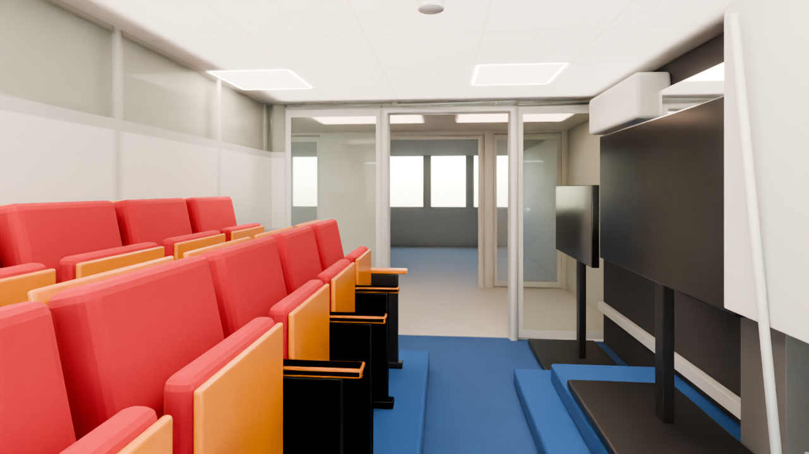
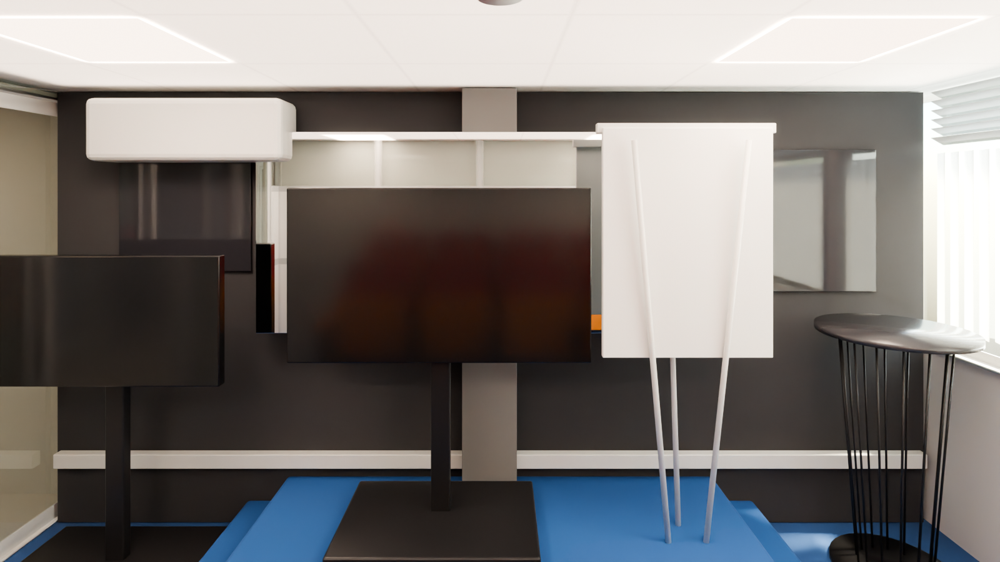
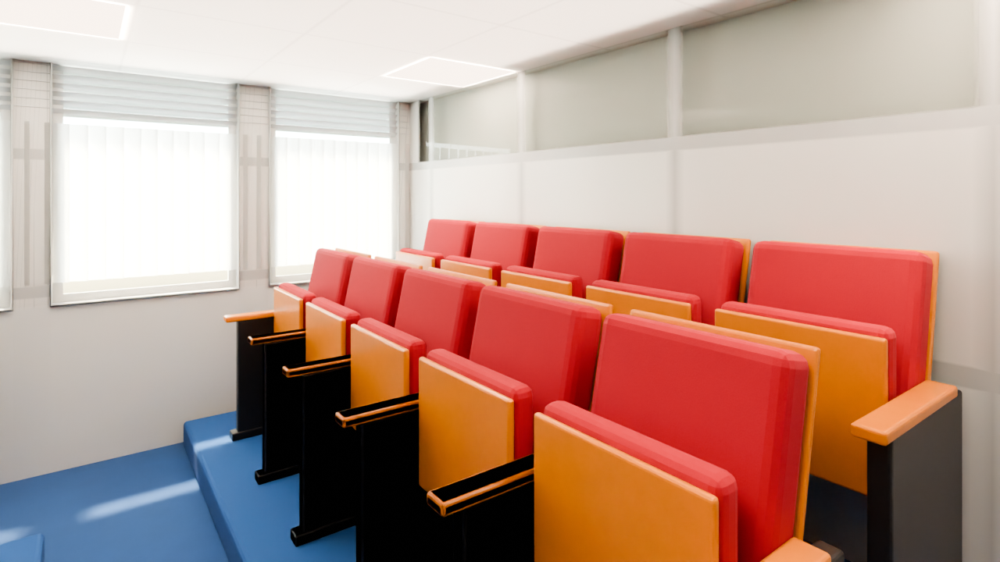
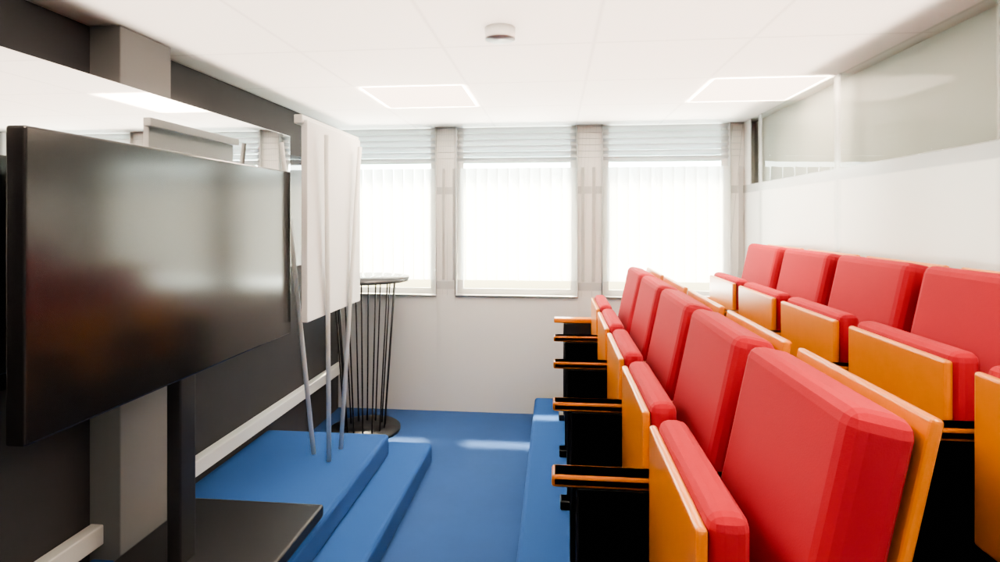

Visual Space — National ICT Innovation Hub
Ground floor, top-left corner room, west of KaCyber. A small auditorium: carpeted two-step stage against a black lining wall (west), two carpeted seating tiers of red theatre seats facing it (east), window wall to the north, glazed corridor screen with an open 1.22 m doorway to the south. Furniture at real scale; what does not fit is listed below.
Zone: X -18.62..-15.41, Y +3.35..+7.82 (clear 3.10 x 4.31 m inside the black lining wall), ceiling soffit 2.14 m. Each angle: the reference photo, the shell (model with materials and light only) and the furnished scene. The original meshes are untouched; no render contains people.
3 draft1 final
Zone check and photo mapping
high confidence - matches the plan within 0.3 mAutomatic check: the model's clear room (black lining wall X -18.45, partition to KaCyber X -15.46, corridor screen Y 3.40, window sill Y 7.71) agrees with the plan's 'Visual Space' box (about X -18.75..-15.5, Y 3.4..7.85) within 0.3 m on every side, and the photos agree: window wall with louvres and blinds to the north, glazed corridor screen with a glass door to the south, white partition with clerestory glass to KaCyber in the east, black stage wall in the west.

| Photo | Where it looks | Angle |
|---|---|---|
| 75 - 78 | Seating tiers and loose chairs, the partition, the corridor screen | detail only (close-ups) |
| 79 | East: tiers in front of the white partition | 03 |
| 80 / 81 | South: tiers left, stage right, corridor door at the end | 01 |
| 82 / 84 / 85 | West: the stage, TV, flip chart, mirror wall | 02 |
| 83 | North-west: stage and window corner | covered by 02 |
| 233 | Gold circuit wall and floor AC - outside this room (lobby side) | not used |
| - | Doorway, toward the stage and window | 04 (no photo) |
From the window toward the corridor screen
photo Hub Space-80.jpg, Hub Space-81.jpgLooking south: the seating tiers on the left, the stage with the TVs and flip chart on the right, the glazed corridor screen and glass door at the end.
 Photo Hub Space-80.jpg
Photo Hub Space-80.jpg
FurnisheddraftThe stage and the black wall
photo Hub Space-82.jpg, Hub Space-84.jpg, Hub Space-85.jpgLooking west from the seats: the two-step stage, TV on a stand, flip chart, the mirror wall, the glass boards and the wire bar table.
 Photo Hub Space-82.jpg
Photo Hub Space-82.jpg
FurnishedThe seating tiers
photo Hub Space-79.jpgLooking east at the stepped tiers of red theatre seats in front of the white partition with its clerestory glass.
 Photo Hub Space-79.jpg
Photo Hub Space-79.jpg
FurnisheddraftFrom the doorway (no matching photo)
photo no matching photoAn extra view from just inside the doorway, toward the stage and the window. There is no reference photo for this angle.

FurnisheddraftWhat differs from the photos (ranked)
- Not reviewed yet.
Dropped at real scale
| Item | Why |
|---|---|
| Third and fourth seat tiers (about 20 more theatre seats) | the model room is 3.1 m wide; the stage, an aisle and two tiers at real scale fill it |
| Loose chairs (pink banquet chair, cream, red and lime side chairs) | no free floor left between the tiers and the stage aisle |
| Second stage TV and the wall-mounted dark glass board behind it | the stage is 2.5 m long at real scale; one TV, one small TV and the flip chart fill it |
| Bar stool by the bar table | it would stand in the camera position at the window |
| Gold circuit-pattern wall and the floor-standing AC (photo 233) | they are outside this room's zone (lobby side) |
| Plant and black tripod bag by the corridor screen | no room beside the doorway |
Free camera
Walk the photoreal Visual Space (baked, free camera) →
Files and last updated
| File | Kind | Size | Modified |
|---|---|---|---|
| 01_toward_corridor_furnished.png | DRAFT | 944.9 KB | 2026-10-02 05:18 |
| 02_stage_west_furnished.png | final | 1.3 MB | 2026-10-02 07:19 |
| 03_tiers_east_furnished.png | DRAFT | 925.6 KB | 2026-10-02 05:19 |
| 04_from_doorway_furnished.png | DRAFT | 964.8 KB | 2026-10-02 05:20 |
| tour/index.html | free-camera page | 14.9 KB | 2026-10-02 06:06 |
| walk/index.html | free-camera page | 26.6 KB | 2026-10-02 05:16 |
| walkbaked/index.html | free-camera page | 52.7 KB | 2026-10-02 07:13 |
Render settings
- Room
- Visual Space - X -18.62..-15.41, Y +3.35..+7.82, soffit 2.14 m
- Renderer
- Blender 4.2 LTS, Cycles, CPU only (i5-10505)
- Draft settings
- 1280 x 720, 32 samples, adaptive 0.012, OIDN (finals 1600 x 900, 256 samples)
- Daylight
- North glazing - 12 x 6 m soft panel 4 m out (6500 W), louvre band, vertical blinds; the west facade glazing is covered by the black lining wall
- Ceiling lights
- 4 LED panels 600 x 600, 5000 K, plus a soft ceiling fill
- Tone mapping
- AgX, Medium High Contrast, exposure -0.22 (same as the other rooms)
- Furniture
- Real scale, nothing shrunk
- People
- None, by design